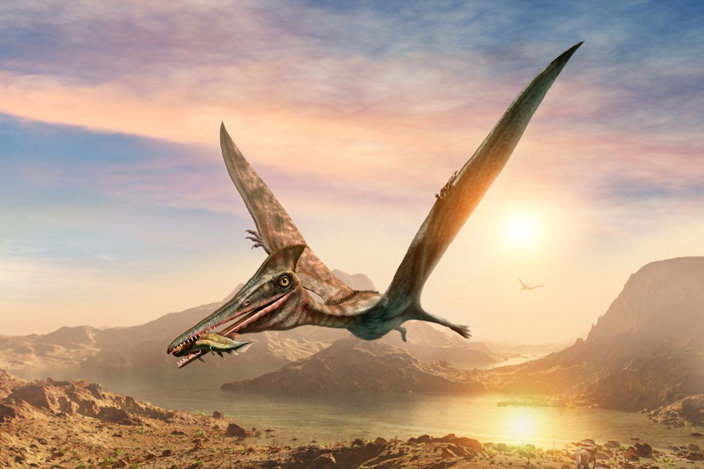

Dinosaurus
Pterosaurus

Pterosaurus yang artinya "kadal bersayap" adalah suatu jenis "reptil terbang" dari cabang atau ordo Pterosauria yang telah punah. Mereka hidup dari akhir Trias sampai akhir masa Kapur (228 sampai 66 juta tahun yang lalu). Pterosaurus adalah vertebrata paling awal yang diketahui memiliki kemampuan terbang yang kuat. Sayap mereka dibentuk oleh selaput kulit, otot, dan jaringan lain yang membentang dari pergelangan kaki yang secara cepat ataupun lambat akan tetap memanjang keempat jarinya. Spesies awal memiliki panjang, rahang bergigi dan ekor panjang, sementara bentuk selanjutnya memiliki ekor yang sangat kecil, dan beberapa gigi yang berkurang. Badannya ditutupi oleh mantel berbulu yang terbuat dari filamen seperti rambut yang dikenal sebagai pycnofibers, yang menutupi tubuh dan bagian sayapnya. Pterosaurus berkembang dengan berbagai ukuran dewasa, mulai dari anurognatoid yang sangat kecil hingga makhluk terbang terbesar yang diketahui sepanjang masa, yaitu termasuk Quetzalcoatlus dan Hatzegopteryx. Pterosaurus sering disebut pada media populer dan oleh masyarakat umum sebagai "dinosaurus terbang", tapi secara ilmiah sebenarnya salah karena Pterosaurus tidak termasuk dinosaurus. Istilah "dinosaurus" terbatas hanya pada reptil yang diturunkan dari nenek moyang terakhir kelompok Saurischia dan Ornithischia (cabang dinosaurus, yang mencakup burung), dan saat ini secara konsensus ilmiah bahwa kelompok ini tidak termasuk pterosaurus, dan juga berbagai kelompok dari reptil laut yang telah punah, seperti ichthyosaurus, plesiosaurus, dan mosasaurus.